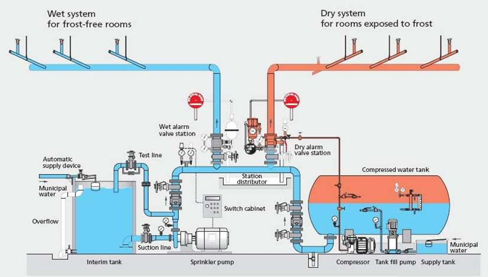
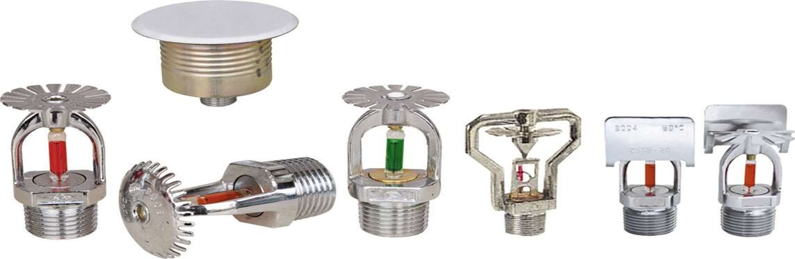
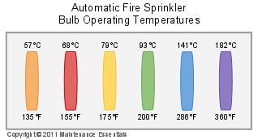

The installation of sprinkler system requires special planning in new building design and usually involves an extensive renovation of an existing building. The sprinkler system may be installed in the following types of buildings or sections of a building as a first aid assistance. i.e. apartment houses, club houses, colleges, dormitories, hospitals, hotels, office buildings, and the basement used as car parking's.
Automatic sprinklers are connected to a water distribution system. A sprinkler nozzle is closed by a fusible plug that melts at a predetermined temperature, above normal room temperature, releasing water to fall on the source of heat.
Sprinklers have the advantage of quickly supplying water to fire before it gain dangerous headway and of preventing the access of air to the fire by smothering it with water.
In some cases an open head sprinkler system for the protection of the interior of the building is provided.

Typically, a Fire Sprinkler Systems are made up from a series of components including; Stop Valve, Alarm Valve, Fire Sprinkler (head), Alarm Test Valve and Motorised Alarm Bell (Gong). In addition to this there are additional components that support this arrangement including a Valve Monitor, Pressure Switch and Flow Switch.
The illustration to the right shows each of these components, and the approximate location within the arrangement.
This illustration shows only one type of fire sprinkler system however there are other types including dry pipe, pre-action, tail-end, residential and domestic fire sprinkler systems.

The Stop Valve is used to isolate the water supply, it may also be called the isolating valve. It is often painted RED in colour with a large black circular handle, and is locked in the OPEN position, allowing the free flow of water. The stop valve is used to isolate (stop) the water supply coming in to the fire sprinkler system. Often the Stop Valve is also fitted with a (2) Valve Monitor that is used to monitor the state (open or closed) of the Stop Valve.
that is used to monitor the state (open or closed) of the Stop Valve.
The water within an automatic fire sprinkler system can be divided into two parts:
This is the water being fed into an automatic fire sprinkler system from a water supply such as the town mains or a static water supply such as a tank, up to the Stop Valve.
The water after the stop valve forms part of the installation.
The Alarm Valve is used to control the flow of water into the fire sprinkler system. This is accomplished by providing a one way valve that is normally closed when the water pressure on the fire sprinkler side of the valve exceeds the water supply pressure. When the pressure equalises or falls below the water supply pressure, the valve opens to enable water flow.
The Fire Sprinkler is also used to control the flow of water. It is essentially a valve that when exposed for a sufficient time to a temperature at or above the temperature rating of the heat sensitive element (glass bulb or fusible link) releases, allowing water to flow from only the affected sprinkler. The operation and subsequent water flow of an automatic fire sprinkler will lead to a drop in pressure within the fire sprinkler system after the alarm valve.
The alarm test valve is a small valve, normally secured in the closed position. The alarm test valve is fitted between the sprinkler system side of the alarm valve and the drain. The purpose of the alarm valve is when opened to simulate the flow of water from a single automatic fire sprinkler.
The motorised alarm bell or gong is a mechanical device, operated by the flow of water oscillating a hammer that strikes a gong, causing an audible alarm signal.
The pressure switch is an electro-mechanical device that monitors a fire sprinkler system for a fall in water pressure after the alarm valve. The purpose of monitoring a fall in pressure is to activate a switch that is monitored by a fire alarm panel or alarm signalling equipment, as the primary method for signalling an alarm to the fire brigade.
The flow switch is an electro-mechanical device that monitors the flow of water through a section of pipe within an automatic fire sprinkler system. Flow switches are often fitted with a mechanical delay (up to six minutes) preventing small or minor water flow fluctuations from signalling an alarm. When sustained water flow is detected by a flow switch, a signal is transmitted to a fire indicator panel. This signal is then used to determine which section (floor) of a fire sprinkler system has water flow. Note: Most flow switches fitted to automatic fire sprinkler systems are NOT set to automatically call the fire brigade
Jacking are manual (hand) or electric (semi-automatic or fully automatic) pumps are not always fitted to an automatic fire sprinkler system. They however provide a method of pumping (boosting) water from the water supply to the fire sprinkler system after the alarm valve. This leads to an increase in water pressure in the fire sprinkler system, thus forcing the alarm valve into the closed position. Jacking Pumps have a secondary function of maintaining the water pressure within a fire sprinkler system reducing the likelihood of false alarms caused by low pressure, caused by small water leaks.
A pressure gauge us a mechanical device that is usually fitted to an automatic fire sprinkler system. There are usually two gauges fitted to a system, one showing the water supply pressure and the second showing the installation pressure. Normally the pressure differential should be not less than 200 KPa.
In addition to the main components of the fire sprinkler system, there are a series of ancillary (support) components that regularly form part of an automatic fire sprinkler system.
Normally an wet pipe automatic fire sprinkler system, is fully charged with water coming from a known reliable water supply. The installation is pressurised with the alarm valve secured in the open position. When a fire sprinkler is exposed for a sufficient time to a temperature at or above the temperature rating of the heat sensitive element (glass bulb or fusible link) it releases, allowing water to flow from only the affected sprinkler. Additional fire sprinklers may also operate if they too are exposed to sufficient heat.
When this occurs water from the water supply will pass through the alarm valve to the affected fire sprinkler and also past the alarm bell. The resultant pressure drop will also activate the alarm pressure switch, which in turn will activate an alarm calling the fire brigade.
A flow switch will also operate in the affected section of the fire sprinkler system, indicating the location of the water flow. (In the case of a multi-storey building there is typically one flow switch per floor). The flow switch will indicate its location a fire indicator panel (but may not call the fire brigade).
The water supply may be isolated (stopping the flow of water to the affected fire sprinklers) by closing the stop valve.

An Automatic Fire Sprinkler is a valve used to control the flow of water. It operates as a valve by allowing the flow of water contained in a fire sprinkler system when the heat sensitive element (glass bulb or fusible link) is operated. This is caused when the fire sprinkler is exposed for a sufficient time to a temperature at or above the temperature rating of the heat sensitive element.
The fusible link of an automatic fire sprinklers typically are colour coded to illustrate their predetermined operating temperature.